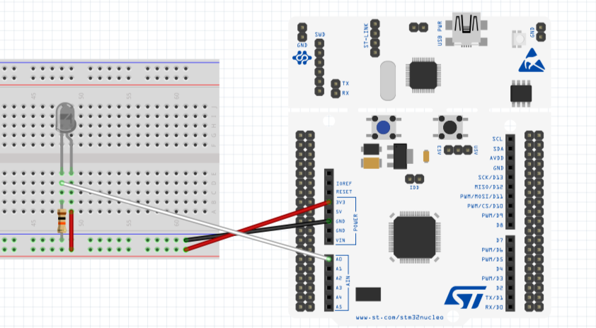

STM32資料 基礎編 5
赤外線を検出してみよう
赤外線は目には見えないが、制御や誘導などで非常に便利である
そこで今回は、フォトトランジスタとAD変換という手法を使って赤外線を検出してみよう
今回やること
作業の流れ
- ピンを割り当てる
- wrapper.cppにコードを書き込む
- フォトトランジスタとSTM32を配線でつなぐ
- STM32にプログラムを書き込み実行する
ピンの割り当て
今回はADCという機能を使います
(プロジェクト名).iocからPA0を選択し、ADC1_IN0を割り当てよう
回路
フォトトランジスタとSTM32をジャンパー線を使ってつなぐ
回路が少し複雑なので、気を付けてつけてね
配線図
フォトトランジスタと10kΩの抵抗を使ってね
プログラム
今回はADCのスタートと変換待機と読み取りの3つの関数を使います
ADCのスタート
指定したADCを起動するための関数
HAL_ADC_Start(&hadc1);この関数の引数
- &hadc1
使用するADCの種類・・・TIM1を使用
AD変換の待機
指定したADCを起動するための関数
HAL_ADC_PollForConversion(&hadc1, time)この関数の引数
- &hadc1
使用するADCの種類・・・TIM1を使用 - time
最大の待機時間（ミリ秒）
値の読み取り
変換した値を読み取るための関数
Value = HAL_ADC_GetValue(&hadc1);この関数の引数
- Value
変換した値を出力する変数(16桁の符号なし整数) - &hadc1
使用するADCの種類・・・TIM1を使用
ADCを止める関数
今回は使用しないが、一応紹介しておく
HAL_ADC_Stop(&hadc1);引数はスタートの関数と同じなので頭の片隅においておくといいかも?
サンプルコード
実際にAD変換を行い、その値をシリアル通信で送信するプログラムを作成した
蛍光灯や日光にあてて値の変化を読み取ってみよう
#include "wrapper.hpp"
#include "adc.h"
#include "usart.h"
uint16_t ADC_Value = 0;
void init(){
//ADCのスタート
HAL_ADC_Start(&hadc1);
HAL_Delay(500);
}
void loop(){
//変換を待機
if(HAL_ADC_PollForConversion(&hadc1, 1000) == HAL_OK ){
//値の読み取り
ADC_Value = HAL_ADC_GetValue(&hadc1);
//値の送信
std::string str = "ADC_Value:" + std::to_string(ADC_Valu) + "\n";
HAL_UART_Transmit(&huart2, (uint8_t *)str.c_str(),str.length(),100);
}
//ちょっと待機
HAL_Delay(100)
}終わりに
今回は、AD変換を使って赤外線を読み取ってみた
色々な場面で使えるので、ぜひ覚えておこう